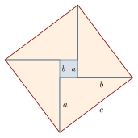
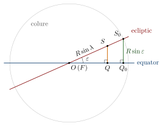

Chapter 9: Algebra, Geometry and Number Theory¶
The preceding chapters followed individual authors. This chapter takes up what cuts across them: how algebra was understood as a discipline, the treatment of several unknowns and of products of unknowns, the later history of the indeterminate equations, the comparison of Indian and Greek geometry, the practice of demonstration, and the way these tools were combined in spherical astronomy. Results already set out in the author chapters—Brahmagupta’s bhāvanā, Bhāskara II’s cyclic method, Śrīdhara’s rule for the quadratic—are referred to rather than repeated (Plofker 2009; Datta and Singh 1935; Sarasvati Amma 1979).
9.1 Algebra as a Discipline¶
9.1.1 Names and scope¶
Indian authors called algebra “calculation with the unknown” (avyaktagaṇita) or “seed calculation” (bījagaṇita). The “seed” (bīja) is the underlying principle or analysis from which a solution grows; Bhāskara I already uses the word for the idea behind a rule. Arithmetic, by contrast, was “calculation with the known” (vyaktagaṇita). Bhāskara II explains the relation between the two at the beginning of his Bījagaṇita: arithmetic has its source in algebra, and without algebraic reasoning most problems cannot be understood by the slow-witted. Later in the work he adds that sagacity is the real analysis, the symbols being only its aids.
9.1.2 Development¶
Table 9.1 lists the principal texts in which Indian algebra developed, from Āryabhaṭa to the commentators of the early modern period.
| Author and text | Date | Notes |
|---|---|---|
| Āryabhaṭa, Āryabhaṭīya | 499 | Particular equations; the kuṭṭaka |
| Brahmagupta, Brāhmasphuṭasiddhānta ch. 18 | 628 | Rules of signs and zero; unknowns named by colours; linear, quadratic and indeterminate equations; the bhāvanā |
| Pṛthūdakasvāmin, commentary | 864 | Earliest surviving examples of the algebraic notation |
| Śrīdhara (lost algebra) | c. 750? | Rule for quadratics, quoted by Bhāskara II |
| Śrīpati, Siddhāntaśekhara ch. 14 | c. 1039 | Algebra within astronomy |
| Bhāskara II, Bījagaṇita | 1150 | The classical synthesis; the cakravāla |
| Nārāyaṇa Paṇḍita, Bījagaṇitāvataṃsa | 14th c. | Partly preserved |
| Kṛṣṇa Daivajña, Bījapallava | c. 1600 | Commentary with detailed explanations |
9.1.3 Classification of equations¶
Bhāskara II divides equations into four kinds: those with one unknown (ekavarṇasamīkaraṇa), linear or reducible to linear; those with one unknown in which the unknown appears squared, solved by “removal of the middle term” (madhyamāharaṇa), that is, by completing the square; those with several unknowns (anekavarṇasamīkaraṇa); and those containing products of unknowns (bhāvita). The indeterminate equations, the pulveriser and the square-nature equation, have their own chapters.
9.2 Quadratic Equations¶
The Indian rule for the quadratic developed in three steps: Āryabhaṭa solved particular quadratic problems (Chapter 3); Brahmagupta stated a general rule for \(ax^2 + bx = c\) (Chapter 4); and Śrīdhara’s procedure of completing the square, quoted by Bhāskara II, gave it its classical form, with a discussion of when both roots are acceptable (Chapter 5). What distinguishes the Indian treatment from those of Babylon, Euclid and al-Khwārizmī is that a single rule covers every case, because negative quantities are admitted as coefficients and, in principle, as intermediate results (Plofker 2009; Katz 2009).
9.3 Surds¶
The algebraic word for a surd, karaṇī, has a long history. In the Śulbasūtras a karaṇī is a line that “produces” a square of a given area: the dvikaraṇī is the side of a square of area 2 (the diagonal of the unit square), the trikaraṇī the side of a square of area 3, and so on. In the algebra of Brahmagupta and Bhāskara II, karaṇī came to mean a quantity whose square root is to be taken, and rules were given for adding, subtracting, multiplying and dividing such quantities, and for taking square roots of expressions containing them. One rule finds the square root of an expression such as \(a + \sqrt{b}\) when it is a perfect square: in modern form,
which gives a simple answer when \(a^2 - b\) is a perfect square. For example, \(\sqrt{5 + \sqrt{24}} = \sqrt{3} + \sqrt{2}\), since \(a^2 - b = 1\). The Indian authors thus worked confidently with irrational quantities, keeping them exact when possible and approximating them when necessary.
9.4 Equations in Several Unknowns¶
Brahmagupta already solved problems with several unknowns by elimination, naming the unknowns after colours (Chapter 4). The classical treatment is the chapter of Bhāskara II’s Bījagaṇita on “equations with several colours” (anekavarṇasamīkaraṇa). In Colebrooke’s translation it is chapter 6, “equation involving more than one unknown quantity”, and the method is called analysis by a “multiliteral equation” (Colebrooke 1817).
9.4.1 The rule¶
Bhāskara’s rule, in close paraphrase, runs as follows. In an equation, bring the first unknown to one side and everything else, the other unknowns and the known numbers, to the other, and divide by the coefficient of the first unknown; this gives its value in terms of the rest. If the first unknown has several such values, from several equations, set them equal to one another, clear the fractions, and so obtain new equations without it. Continue in the same way with the next unknown. When the last equation contains two unknowns, solve it in whole numbers by the pulveriser (Section 9.6). If unknowns still remain undetermined, give them arbitrary values. Then work backwards through the earlier values to find all the unknowns. If a value comes out as a fraction, apply the pulveriser again to make it whole.
Two features set the rule apart from the elimination taught in a modern school course. First, the problems are usually indeterminate: there are fewer independent conditions than unknowns, and Bhāskara expects a family of answers, not a single one. Second, the answers must normally be whole numbers, since the unknowns are prices, counts or quotients. The pulveriser and the free choice of a remaining unknown are therefore built into the method from the start (Colebrooke 1817; Plofker 2009).
9.4.2 Four merchants¶
The first example of the chapter (Colebrooke’s §157) concerns four merchants. They have \(5, 3, 6, 8\) horses, \(2, 7, 4, 1\) camels, \(8, 2, 1, 3\) mules and \(7, 1, 2, 1\) oxen respectively, and all four are equally rich. What are the prices? With \(h, c, m, o\) for the prices, the four fortunes are
and equating them in pairs gives three conditions for four unknowns:
In modern notation the elimination can run as follows. The second condition gives \(m = 3h - 3c + o\). Substituted in the third, this gives \(o = 9c - 8h\); substituted in the first, \(20h - 23c + 12o = 0\). Putting the value of \(o\) into the last equation leaves \(85c = 76h\). Since 85 and 76 have no common factor, the whole-number solutions are \(h = 85k\) and \(c = 76k\) for any whole number \(k\). Then \(o = 4k\) and \(m = 31k\). Bhāskara’s own working applies the same rule, written in the notation of named colours. At the last step he introduces a new unknown (lohitaka, “red”), sets it in turn equal to 1, 2 and 3, and obtains the prices \(85, 76, 31, 4\), then \(170, 152, 62, 8\), then \(255, 228, 93, 12\). He adds that an endless number of answers can be had by such suppositions. With the first set, each merchant’s fortune is \(853\):
and the same total results for the other three.
9.4.3 Other problems of the chapter¶
The rest of the chapter shows how widely the method was meant to apply. One example is a “hundred birds” problem: doves are sold at 5 for 3 drammas, cranes at 7 for 5, geese at 9 for 7 and peacocks at 3 for 9, and a hundred birds are to be bought for a hundred drammas. One answer given is 5 doves, 56 cranes, 27 geese and 12 peacocks, costing 3, 40, 21 and 36 drammas. The type had a long history in India and elsewhere (Chapter 10). Other examples are remainder problems, in which the unknown quotients are the “several unknowns”. For instance, a number leaves remainders 5, 4, 3 and 2 when divided by 6, 5, 4 and 3. Writing the number as \(6a + 5 = 5b + 4 = 4c + 3 = 3d + 2\) and eliminating step by step gives 59. The general answer is \(60k - 1\), since the number is one less than a common multiple of the four divisors. Further examples set remainder conditions on multiples of the unknowns, and one combines conditions on their sum, difference and product.
Elimination for systems of linear equations had been practised much earlier in China. The “rectangular arrays” (fangcheng) of the eighth chapter of the Nine Chapters on the Mathematical Art (compiled by about the first century CE) solve determinate systems by operating on columns of numbers laid out with counting rods (Katz 2009). The Indian treatment differs in its notation, which writes the unknowns as named colours in a symbolic line, and in its emphasis on indeterminate systems with whole-number solutions. No transmission in either direction is known.
9.5 Equations with Products of Unknowns¶
For the equation \(xy = ax + by + c\), Brahmagupta and Bhāskara II give a method that amounts to factorisation. Since
the equation becomes \((x - b)(y - a) = c + ab\). Choosing any factorisation \(c + ab = PQ\) gives \(x = b + P\), \(y = a + Q\).
Example
Find whole numbers with \(xy = 4x + 3y + 2\). Here \((x - 3)(y - 4) = 2 + 12 = 14\). The factorisations \(14 = 1\cdot 14 = 2\cdot 7 = 7\cdot 2 = 14\cdot 1\) give the solutions \((x,y) = (4, 18)\), \((5, 11)\), \((10, 6)\) and \((17, 5)\). Check: \(5\cdot 11 = 55 = 20 + 33 + 2\).
9.6 Indeterminate Equations¶
The greatest originality of Indian algebra lies in its treatment of equations to be solved in whole numbers. Diophantus of Alexandria (3rd century) had solved many indeterminate equations, but sought rational rather than integer solutions and gave particular solutions rather than general methods. The Indian authors developed general procedures for two important classes (Weil 1984; Plofker 2009).
9.6.1 The linear case: the pulveriser¶
For \(ax - by = c\), Āryabhaṭa’s kuṭṭaka (Chapter 3) finds all solutions by mutual division. Later authors added refinements:
-
reducing the equation first by the greatest common divisor of \(a\) and \(b\), and noting that there is no solution unless that divisor also divides \(c\);
-
the “constant pulveriser” (sthirakuṭṭaka), which solves \(ax - by = \pm 1\) once and then obtains the solution for any \(c\) by multiplication;
-
the solution of several simultaneous conditions (“a number which divided by \(a_1\) leaves \(r_1\), by \(a_2\) leaves \(r_2\), …”) by combining them two at a time, the procedure now taught as the Chinese remainder theorem;
-
applications to astronomy, where the pulveriser finds the number of days elapsed from given remainders of planetary revolutions.
9.6.2 The quadratic case¶
For \(Nx^2 + 1 = y^2\) the methods were described in Chapters 4 and 5. A second run of the cyclic method, for \(N = 67\), shows how it behaves on a case with a larger solution (Table 9.2).
| \(m\) | \(x\) | \(y\) | \(k\) | check: \(67x^2 + k = y^2\) |
|---|---|---|---|---|
| — | 1 | 8 | \(-3\) | \(67 - 3 = 64\) |
| 7 | 5 | 41 | 6 | \(1675 + 6 = 1681\) |
| 5 | 11 | 90 | \(-7\) | \(8107 - 7 = 8100\) |
| 9 | 27 | 221 | \(-2\) | \(48843 - 2 = 48841\) |
| 9 | 232 | 1899 | \(-7\) | \(3606208 - 7 = 3606201\) |
| 5 | 437 | 3577 | 6 | \(12794923 + 6 = 12794929\) |
| 7 | 1106 | 9053 | \(-3\) | \(81956812 - 3 = 81956809\) |
| 8 | 5967 | 48842 | 1 | \(2385540963 + 1 = 2385540964\) |
At the second step, \(m\) must make \(41 + 5m\) divisible by 6; the possible values are \(5, 11, 17, \ldots\), and \(m = 5\) gives the smallest \(|m^2 - 67| = 42\). The smallest solution is \(x = 5967\), \(y = 48842\): indeed \(5967^2 = 35{,}605{,}089\) and \(67 \times 35{,}605{,}089 + 1 = 2{,}385{,}540{,}964 = 48842^2\). Using Brahmagupta’s rule for \(k = -2\) at the fourth line, the work can be shortened: composing \((27, 221, -2)\) with itself gives \((11934, 97684, 4)\), and dividing \(x\) and \(y\) by 2 gives \((5967, 48842)\) at once.
9.6.3 A modern view of the square-nature equation¶
For readers who know some modern number theory, the following remarks explain why the Indian methods work. They are a modern commentary, not a description of what the Indian authors wrote.
-
Solutions as units. Since the bhāvanā is the rule for multiplying numbers \(y + x\sqrt{N}\) (Chapter 4), all solutions in positive integers are the powers of the smallest one: \(y_k + x_k\sqrt{N} = (y_1 + x_1\sqrt{N})^k\). This is why one solution yields infinitely many.
-
An old acquaintance. For \(N = 2\) the smallest solution is \((x, y) = (2, 3)\), and its powers give
\[(3 + 2\sqrt2)^2 = 17 + 12\sqrt2,\qquad (3 + 2\sqrt2)^4 = 577 + 408\sqrt2 ,\]so that \(2\cdot 12^2 + 1 = 17^2\) and \(2 \cdot 408^2 + 1 = 577^2\). The ratios \(17/12\) and \(577/408\) are exactly the approximations to \(\sqrt{2}\) in the Śulbasūtras (Chapter 2). There is no evidence that the Śulba authors thought in these terms; the coincidence shows how naturally good rational approximations to square roots arise from such equations.
-
Continued fractions. In Europe the general solution of \(Nx^2 + 1 = y^2\) was found through the continued-fraction expansion of \(\sqrt{N}\) (Euler; Lagrange, 1768–70). The continued fraction of \(\sqrt{61}\), for example, is
\[\sqrt{61} = [7; \overline{1, 4, 3, 1, 2, 2, 1, 3, 4, 1, 14}],\]with a period of length 11. For its successive convergents \(p/q\), the quantity \(p^2 - 61q^2\) takes the values \(-12\), \(3\), \(-4\), \(9\), \(-5\), \(5\), \(-9\), \(4\), \(-3\), \(12\), \(-1\), and so on. The cyclic method of Chapter 5 passes through some of these convergents—\(8/1\), \(39/5\), \(164/21\), \(453/58\), \(1523/195\), \(5639/722\), \(29718/3805\)—but skips others (\(125/16\), \(1070/137\), \(24079/3083\)). In modern terms the cyclic method follows the “nearest integer” continued fraction rather than the regular one; C.-O. Selenius showed in 1975 that it is, in this sense, a particularly efficient algorithm, often faster than the regular continued fraction (Selenius 1975).
-
Why the method stops. At every step of the cyclic method the additive quantity \(k\) remains small—it can be shown to stay below a bound depending only on \(N\)—and the process is closely tied to the periodic continued fraction of \(\sqrt{N}\), so it eventually reaches \(k = \pm 1\), \(\pm 2\) or \(\pm 4\), from which Brahmagupta’s rules finish the work. Neither Bhāskara nor his commentators proved this; a complete proof uses the theory of continued fractions developed by Lagrange.
9.6.4 Square roots from the square-nature equation¶
The connection between the square-nature equation and approximations to square roots was also exploited directly. Nārāyaṇa Paṇḍita (14th century) used solutions of \(Nx^2 + 1 = y^2\) to approximate \(\sqrt{N}\): since \(y^2 = Nx^2 + 1\), the fraction \(y/x\) is slightly larger than \(\sqrt{N}\), and the error shrinks rapidly as larger solutions are taken (Datta and Singh 1935).
Worked example: \(\sqrt{10}\)
The smallest solution of \(10x^2 + 1 = y^2\) is \((x, y) = (6, 19)\), since \(10 \cdot 36 + 1 = 361 = 19^2\). Composing it with itself by the bhāvanā gives \(x = 2 \cdot 6 \cdot 19 = 228\), \(y = 19^2 + 10 \cdot 6^2 = 721\), and indeed \(10 \cdot 228^2 + 1 = 519{,}841 = 721^2\). The two approximations are
against \(\sqrt{10} = 3.1622777\); the second is too large by only \(3 \times 10^{-6}\).
9.6.5 Other indeterminate problems¶
The texts contain many further indeterminate problems: finding numbers whose sum and difference are both squares, or whose squares added to or subtracted from a given number give squares; finding rational right triangles with given properties; and equations of the form \(ax^2 + bx + c = y^2\), which are reduced to the square-nature equation by completing the square. These problems are close to some of those of Diophantus, and Bhāskara II and Nārāyaṇa solve many of them with ingenuity, usually by producing a particular solution and then a family of solutions (Datta and Singh 1935).
9.7 Geometry and Mensuration¶
Indian geometry after the Śulbasūtras was mostly mensuration: rules for computing lengths, areas and volumes, together with the geometry of the circle needed for astronomy. Table 9.3 collects the principal rules. It includes rules that are inexact, since the tradition itself distinguished “gross” (sthūla) from “accurate” (sūkṣma) rules and later authors corrected earlier ones.
| Figure | Rule (modern form) | Source and remarks |
|---|---|---|
| Right triangle | \(c^2 = a^2 + b^2\) | Śulbasūtras onward |
| Triangle | \(A = \tfrac{1}{2}bh\); \(A = \sqrt{s(s-a)(s-b)(s-c)}\) | Āryabhaṭa; Brahmagupta |
| Cyclic quadrilateral | \(A = \sqrt{(s-a)(s-b)(s-c)(s-d)}\); diagonals from sides | Brahmagupta |
| Circumradius of cyclic quadrilateral | \(R = \tfrac14\sqrt{\dfrac{(ab+cd)(ac+bd)(ad+bc)}{(s-a)(s-b)(s-c)(s-d)}}\) | Parameśvara (Gupta 1977) |
| Trapezium | \(A = \tfrac{1}{2}(a + c)h\) | Āryabhaṭa |
| Circle | \(C = \pi d\) with \(\pi = 3\), \(\sqrt{10}\), \(3927/1250\), \(22/7\); \(A = \tfrac{1}{2}C\cdot\tfrac{1}{2}d\) | Various; Āryabhaṭa, Brahmagupta, Bhāskara II |
| Chord and arrow | \(\left(\tfrac{c}{2}\right)^2 = h(d - h)\) | Āryabhaṭa |
| Pyramid, cone | \(V = \tfrac{1}{3}Ah\) | Brahmagupta (Āryabhaṭa’s \(\tfrac{1}{2}Ah\) is wrong) |
| Frustum (square ends) | \(V = \tfrac{h}{6}\left[a^2 + b^2 + (a+b)^2\right]\) | Bhāskara II (Līlāvatī); exact |
| Sphere | \(S = 4\pi r^2\), \(V = \tfrac{4}{3}\pi r^3\) | Bhāskara II (Āryabhaṭa’s rule wrong) |
The rule for the chord and arrow—in a circle of diameter \(d\), a chord \(c\) cut off by a segment of height (“arrow”) \(h\) satisfies \((c/2)^2 = h(d-h)\)—follows from the right-triangle theorem and is used constantly in astronomy, for example to find the visible part of the Moon in an eclipse.
9.7.1 Problems of distance and height¶
Many geometrical problems in the texts combine the right-triangle rule with simple algebra, and the same problem often passes from author to author in new dress. Brahmagupta’s two ascetics on a mountain become Bhāskara II’s two monkeys on a tree (Chapter 5): from the top of a height \(h\) one descends and walks a distance \(d\) to a goal, the other rises by \(x\) and goes straight there, and both travel equally far. In general the condition \(x + \sqrt{(h + x)^2 + d^2} = h + d\) gives \(x = hd/(2h + d)\), which is the Līlāvatī’s answer of 50 for \(h = 100\), \(d = 200\).
Problems of shadows (Chapter 3) rest on similar triangles: a gnomon of height \(g\) casting a shadow \(s\) shows that the Sun’s altitude has the “sine” \(Rg/\sqrt{g^2+s^2}\), and astronomers used this to find the time of day and the latitude of a place from the noon shadow.
9.7.2 Numbers with square properties¶
A family of problems asks for numbers satisfying conditions that make various combinations perfect squares. For example: find two numbers whose sum and difference are both squares. Take any two squares \(a^2 > b^2\) and set the numbers to \(\tfrac12(a^2 + b^2)\) and \(\tfrac12(a^2 - b^2)\); their sum is \(a^2\) and their difference \(b^2\). With \(a = 3\), \(b = 1\) the numbers are 5 and 4 (sum 9, difference 1). Bhāskara II and Nārāyaṇa solve many problems of this kind, often of considerable ingenuity, by choosing a convenient value for one quantity and solving for the rest.
9.8 Indian and Greek Geometry Compared¶
Indian and Greek geometry shared a great deal of content: both knew the theorem of the right triangle, the properties of similar triangles, the areas of the common figures, the volume of the pyramid and (eventually) of the sphere, and the rules of the circle. They differed in aims and in style.
-
Number and magnitude. Greek geometers from Euclid onward kept geometry separate from arithmetic, treating lengths and areas as magnitudes rather than numbers, partly because of the discovery that some magnitudes, such as the diagonal and side of a square, have no common measure. Indian geometers treated lengths and areas as numbers from the start and computed with them, using approximations where necessary and surds (karaṇī) where an exact value was wanted.
-
Deduction and computation. Euclid’s Elements derives its theorems in a single deductive chain from definitions, postulates and common notions. Indian texts give rules for computing, and justify them in commentaries by figures, by reduction to earlier rules and by algebraic rearrangement, without a single axiomatic order.
-
Construction. Both traditions valued constructions. The Śulbasūtras construct with cord and pegs much as Euclid constructs with compass and straightedge, and both turn rectangles into squares and add and subtract squares.
-
Exact and approximate. Indian texts openly give “gross” and “accurate” rules side by side and are content with good approximations where exact results are unavailable; Greek geometry, in its classical form, sought exact results and treated approximation (as in Archimedes’ bounds for \(\pi\)) as a separate kind of work.
Neither style is simply better. The Greek style produced a model of rigorous proof that became central to later mathematics; the Indian style produced powerful computational methods and an easy combination of geometry with algebra, which later became central too.
9.9 Demonstrations in Geometry¶
9.9.1 The right-triangle theorem¶
In the Bījagaṇita, Bhāskara II gives two demonstrations of the theorem of the right triangle.
The first is a dissection (Figure 9.1). Inside the square on the hypotenuse \(c\), four copies of the right triangle with legs \(a < b\) are placed so that a small square of side \(b - a\) is left in the middle. The area of the large square is therefore

The second uses similar triangles. The perpendicular from the right angle to the hypotenuse divides the triangle into two smaller triangles similar to the whole. If it cuts the hypotenuse into segments \(p\) and \(q\), then by the rule of three \(a^2 = cp\) and \(b^2 = cq\), and adding, \(a^2 + b^2 = c(p + q) = c^2\).
A popular story says that Bhāskara accompanied the first figure with the single word “Behold!”. This oversimplifies: the text states the computation of the areas in words, as Indian demonstrations usually do.
9.9.2 The commentary tradition¶
Most such demonstrations are found in the commentaries, from Bhāskara I to the Kerala texts, whose character is described in Chapter 1 (Section 1.5). In geometry they freely combine figures, algebraic rearrangement and the rule of three, and they aim to show why a computational rule works rather than to derive theorems from axioms (Srinivas 2005; Keller 2006).
9.10 Trigonometry¶
Indian trigonometry worked with lengths in a circle of radius \(R\). Writing \(\textrm{jyā}(\theta) = R\sin\theta\), \(\textrm{koṭijyā}(\theta) = R\cos\theta\) and \(\textrm{utkramajyā}(\theta) = R - R\cos\theta\), the principal relations used by Indian astronomers can be written as follows.
Mathematical Result: Relations among Indian trigonometric quantities
Worked example: from \(30^\circ\) to \(15^\circ\) and \(7^\circ 30'\)
With \(R = 3438\), the sine of \(30^\circ\) is \(1719\) and the cosine is \(\sqrt{3438^2 - 1719^2} \approx 2977.40\). The versed sine of \(30^\circ\) is \(3438 - 2977.40 = 460.60\), and the half-angle rule gives
Repeating the step, the cosine of \(15^\circ\) is about \(3320.85\), the versed sine \(117.15\), and \(\textrm{jyā}(7^\circ 30') \approx \sqrt{\tfrac12 \times 3438 \times 117.15} \approx 448.75\). Āryabhaṭa’s table gives 890 and 449.
The first follows from the right-triangle theorem; the second (the half-angle rule) was used from Āryabhaṭa onward to construct sine tables by repeated halving; the third (the sum and difference rule) is found in Bhāskara II’s Jyotpatti and was used to build finer tables. Indian astronomers also tabulated sines more finely and interpolated between tabular values by second-order rules (Chapter 4), and the Kerala school derived the sine and cosine series (Chapter 6).
9.11 Mathematics at Work in Astronomy¶
Much of the mathematics described in this volume was developed for, and tested in, astronomical computation. A few examples show how the tools were used together. The astronomy itself is the subject of Volume 12.
Interpolating in a sine table
Find \(R\sin 20^\circ\) from Āryabhaṭa’s table (\(R = 3438\)), whose nearest entries are \(890\) at \(15^\circ\), \(1105\) at \(18^\circ 45'\) and \(1315\) at \(22^\circ 30'\).
The arc \(20^\circ\) lies \(1^\circ 15'\) beyond \(18^\circ 45'\), that is, \(t = \tfrac13\) of a tabular interval. The differences before and after are \(\Delta_{-1} = 1105 - 890 = 215\) and \(\Delta_0 = 1315 - 1105 = 210\).
-
Linear interpolation: \(1105 + \tfrac13 \times 210 = 1175.0\).
-
Brahmagupta’s second-order rule (Chapter 4): \(1105 + \tfrac13\cdot\tfrac{215+210}{2} + \tfrac19\cdot\tfrac{210-215}{2} = 1105 + 70.83 - 0.28 = 1175.56\).
The modern value is \(3438 \sin 20^\circ = 1175.87\). The second-order rule removes most of the error of linear interpolation; what remains is mainly due to the rounding of the tabulated sines to whole minutes.
Time and altitude from a shadow
Indian astronomers used a gnomon (śaṅku) of 12 finger-breadths. If at some moment its shadow is 5 finger-breadths long, the hypotenuse from the tip of the gnomon to the tip of the shadow is \(\sqrt{12^2 + 5^2} = 13\), and the Sun’s altitude \(a\) satisfies
which the sine table converts to an altitude of about \(67^\circ 23'\). From the altitude, the latitude and the Sun’s declination, further rules give the time elapsed since sunrise.
9.11.1 Reasoning inside the sphere: the declination of the Sun¶
Indian spherical astronomy rarely used spherical triangles. Its standard method was to work with straight lines inside the sphere—sines, perpendiculars and their projections on chosen planes—and to relate them by similar right triangles and the rule of three. The rule for the declination of the Sun, a standard rule of the siddhāntas that Bhāskara II, among others, gives in his Golādhyāya, shows the method at its simplest (Plofker 2009; Van Brummelen 2009).
Let the celestial sphere have centre \(O\) and radius \(R\). The planes of the equator and of the ecliptic meet along the line joining the equinoxes, and are inclined to each other at the obliquity \(\varepsilon\), which Indian astronomers took as \(24^\circ\). Let the Sun \(S\) stand on the ecliptic at longitude \(\lambda\), measured from the vernal equinox \(E\). From \(S\) two perpendiculars are drawn. The first, \(SF\), falls on the line \(OE\) and lies in the plane of the ecliptic; it is the sine of the arc \(ES\), \(R\sin\lambda\) (the bhujajyā). The second, \(SQ\), falls on the plane of the equator; it is the sine of the declination, \(R\sin\delta\) (the krāntijyā). Because \(SF\) and \(FQ\) are both perpendicular to \(OE\), the angle \(SFQ\) is the angle between the two planes, \(\varepsilon\), and the triangle \(SFQ\) is right-angled at \(Q\). At the solstice, where \(\lambda = 90^\circ\), the foot \(F\) is the centre itself and the perpendicular to the equator is \(R\sin\varepsilon\), the sine of the greatest declination. Seen along the line of the equinoxes, the two right triangles lie one inside the other (Figure 9.2), and they are similar. By the rule of three, as the radius is to the sine of the greatest declination, so is the sine of the longitude to the sine of the declination:
In modern notation this is \(\sin\delta = \sin\lambda\,\sin\varepsilon\), the formula that a modern textbook obtains from a right-angled spherical triangle. The rules for the ascensional difference, the time of rising of the signs and the altitude of the Sun were derived in the same way, from other pairs of similar triangles inside the sphere.

Worked example: the declination for \(\lambda = 30^\circ\) and \(60^\circ\)
With \(R = 3438\), interpolation in Āryabhaṭa’s table (Table 3.3) between \(22^\circ 30'\) and \(26^\circ 15'\) gives \(R\sin 24^\circ \approx 1315 + 0.4 \times 205 = 1397\).
\(\lambda = 30^\circ\). \(R\sin\lambda = 1719\), so \(R\sin\delta = 1719 \times 1397/3438 = 698.5\). Read backwards, the table puts \(698.5\) at \(27.5\) units beyond the sine of \(11^\circ 15'\) (671), in an interval of 219 units; so \(\delta \approx 11^\circ 15' + \tfrac{27.5}{219} \times 225' \approx 11^\circ 43'\).
\(\lambda = 60^\circ\). \(R\sin\lambda = 2978\), so \(R\sin\delta = 2978 \times 1397/3438 = 1210.1\), which lies \(105.1\) beyond the sine of \(18^\circ 45'\) (1105) in an interval of 210; so \(\delta \approx 18^\circ 45' + \tfrac{105.1}{210} \times 225' \approx 20^\circ 38'\).
With \(\varepsilon = 24^\circ\) exactly, the modern formula gives \(11^\circ 44'\) and \(20^\circ 37\tfrac12'\); the differences come from the rounding of the table and from linear interpolation in it.
9.11.2 Successive approximation¶
Many astronomical quantities depend on themselves. The true position of a planet depends on a correction that itself depends on the true position; the moment of an eclipse depends on the positions of the Sun and Moon at that very moment. Indian astronomers handled such problems by repeated application of a rule (asakṛtkarma): compute an approximate value, use it to recompute the correction, and repeat until the result no longer changes (aviśeṣa, “without difference”). Parameśvara and Nīlakaṇṭha in Kerala discussed such procedures in detail.
An illustration of the method
Suppose a quantity \(x\) (in degrees) must satisfy \(x = 60^\circ + 0.1 \times \tfrac{180}{\pi}\sin x\), a relation of the same general kind as arises in planetary theory. Start with \(x_0 = 60^\circ\):
| Step | Value of \(x\) |
|---|---|
| 1 | \(64.962^\circ\) |
| 2 | \(65.191^\circ\) |
| 3 | \(65.2008^\circ\) |
| 4 | \(65.2012^\circ\) |
| 5 | \(65.2012^\circ\) |
After four repetitions the value no longer changes at the fourth decimal place. (The numbers here are chosen for illustration; they are not taken from a particular text.)
9.12 Assessment¶
Indian algebra was a calculus of signed quantities, unknowns and surds, written in a compact notation and applied to determinate and indeterminate problems. Its most original achievements lie in number theory: the general solution of linear indeterminate equations, the composition of solutions of quadratic indeterminate equations, and the cyclic method. Indian geometry was largely practical, but it included exact and elegant results—Brahmagupta’s quadrilaterals, Parameśvara’s circumradius, the frustum rule—alongside approximate rules that the tradition itself labelled and improved. The texts justify their rules in their own way, and the commentaries show a lively culture of explanation and demonstration. The weaknesses are as instructive as the strengths. The algebra never acquired symbols for operations or for equality, so that its notation, though genuinely symbolic, stopped short of the manipulative power of the European algebra of the sixteenth and seventeenth centuries; and geometry, outside the commentaries, was seldom pursued for its own sake. Within those limits the tradition combined arithmetic, algebra and geometry with unusual freedom (Plofker 2009; Weil 1984).
Exercises¶
-
Solve \(2x^2 + 3x = 35\) by Śrīdhara’s rule.
-
Find all solutions in positive integers of \(xy = 3x + 2y + 4\).
-
In a circle of diameter 26, a chord has length 24. Find its arrow.
-
A pyramid has a square base of side 6 and height 10. Find its volume by the correct rule and by Āryabhaṭa’s rule.
-
From \(\textrm{jyā}(45^\circ) = 2431\) (with \(R = 3438\)), compute \(\textrm{jyā}(22^\circ 30')\) by the half-angle rule.
-
Find two numbers whose sum is 25 and whose difference is 9, both squares, by the method of the text.
Answers. (1) \(x = (\sqrt{280 + 9} - 3)/4 = 3\frac12\). (2) \((x-2)(y-3) = 10\) gives \((3, 13)\), \((4, 8)\), \((7, 5)\), \((12, 4)\). (3) \(h(26 - h) = 144\), so \(h = 8\) (or 18 for the larger segment). (4) \(120\); Āryabhaṭa’s rule gives \(180\). (5) About \(1315.7\); the table gives 1315. (6) With \(a = 5\), \(b = 3\): the numbers 17 and 8.
Scholarly Note: Further reading
Datta and Singh (1935–38) remains the fullest collection of rules for arithmetic and algebra; Sarasvati Amma (1979) for geometry; Weil (1984) and Selenius (1975) for indeterminate equations; Srinivas (2005) for the tradition of demonstration (Datta and Singh 1935; Sarasvati Amma 1979; Weil 1984; Selenius 1975; Srinivas 2005).